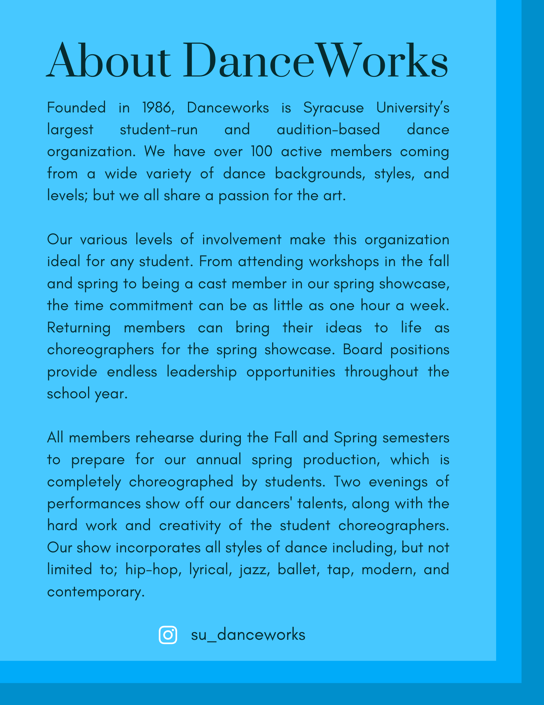
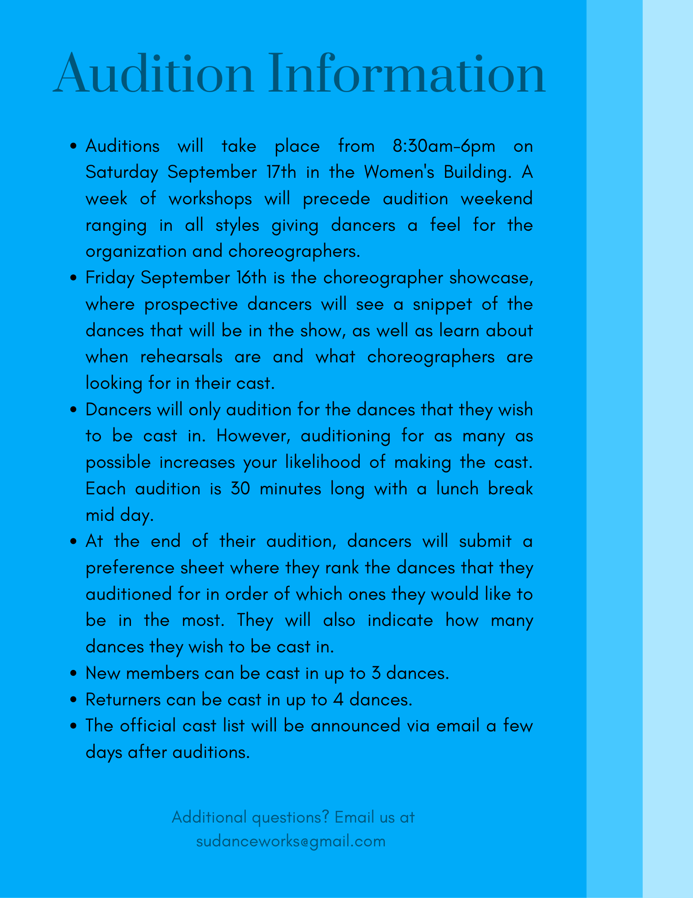

-
Linktree Resources
As the graphic designer, I was also responsible for managing a Linktree page for easy access to Danceworks resources throughout the year. The initial Linktree included links to an about page, photo gallery, and links to old shows. After the initial launch, I would update the links as necessary to highlight events throughout the year.
About Danceworks
Photo Gallery

Audition Information
 -
Workshops
Every fall and spring, Danceworks has a week of open workshops led by student choreographers. For these events, I created a series of graphics to post on the Danceworks Instagram page that aligned with our brand guidelines
Fall Workshop Graphics
click to viewSpring Workshop Graphics
click to view -
As producer for SU Danceworks, Syracuse's largest student-run dance organization, I oversee all fiscal and logistical elements related to the organization and our annual spring showcase. Additionally, I work closely with the directors and assist in the oversight of the entire organization.